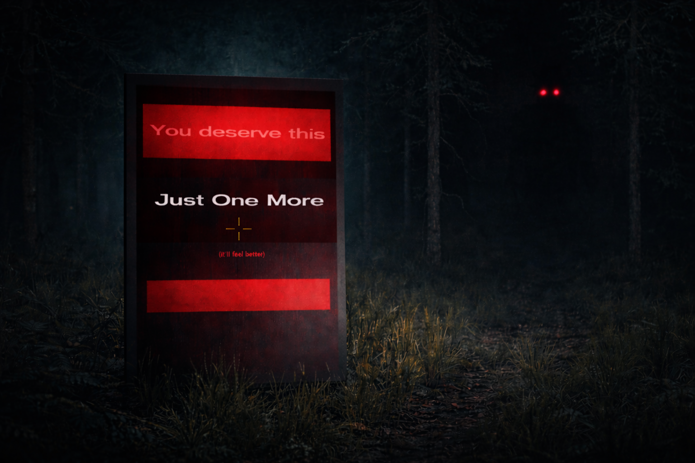
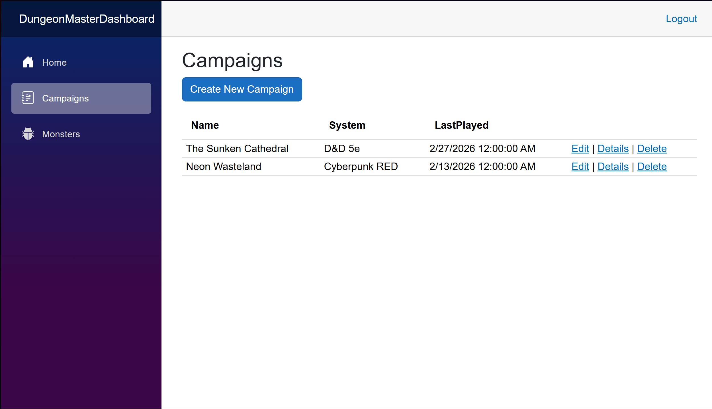
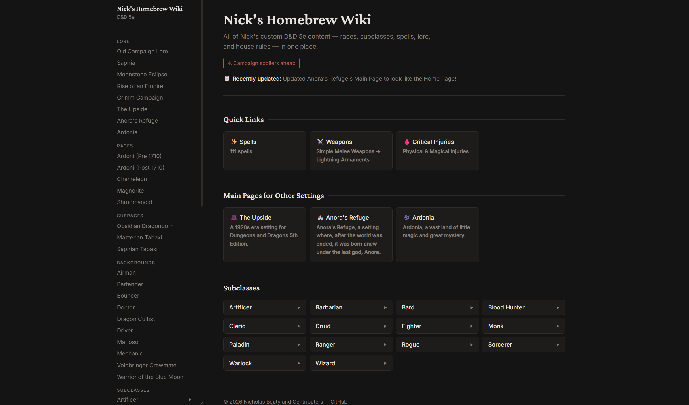
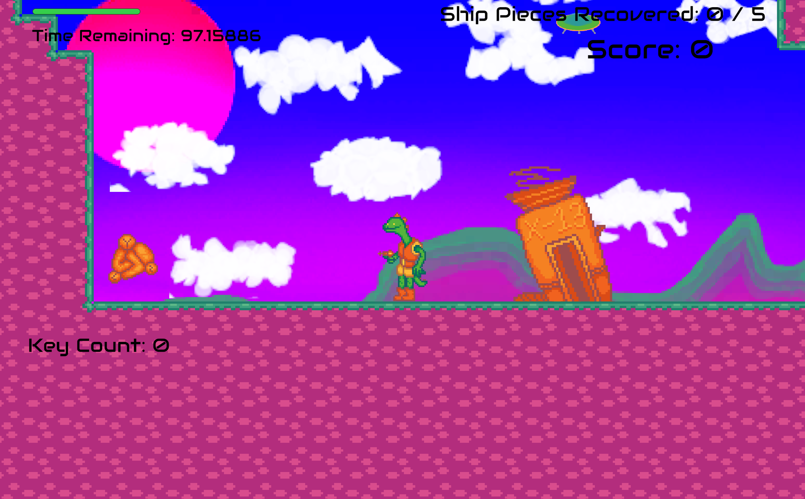

A responsive portfolio website built with HTML, CSS, and JavaScript to showcase my skills and projects.
View on GitHubJust One More is a psychological horror exploration game set in an endless fog-covered forest. Players encounter mysterious consoles that grant power at the cost of slowly distorting the environment and awakening a stalking presence in the woods. The game explores themes of temptation, compulsion, and the consequences of pushing your luck. Built in Unity with C#, Just One More was developed for the 2026 Neumont Winter Game Jam and published on Itch.io.
View on
A web-based dashboard for managing and tracking Dungeons & Dragons campaigns, built with Blazor Web App & SQL Server, published by Azure
View on GitHub
A Homebrew D&D Site hosted through GitHub Pages. I am a contributor to this site, mainly focusing on styling and content creation.
View on GitHub View Site
Participated in a Game Jam hosted by 9th Life Games for Neumont students, where I collaborated with a team to create a 2D platformer game.
View Game on Itch.io